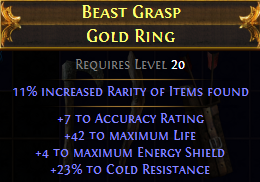

Вещи в PoE делятся на синие (magic), желтые (rare) и оранжевые (unique). Отличаются от обычных вещей тем, что имеют пассивные модификаторы. Уникальные вещи имеют модификаторы, которые попадают в список аффиксов и дополнительные от разработчиков, которых в списке нет.
Модификаторы различаются по префиксам и суффиксам вещи. При этом у magic - 1 префикс и 1 суффикс, а у rare - по 3.
Название магического предмета составляется из аффиксов и базового названия по схеме X Item of Y. Например:
Уровень предмета определяется как 80% от уровня максимального аффикса. Так у префикса Sapphire с параметром +30 к мане требуемый уровень - 23, у суффикса of Joy - 18, поэтому кольцо имеет уровень 18 (23 * 0,8 = 18,4). Чтобы вещь могла получить данный аффикс, она должна иметь уровень выше или равный данному аффиксу.
Числовые модификаторы применяются до процентных. Проценты "% increased" или "% reduced" - складываются, "% more" и "% less" - перемножаются. На оружии аддитивно, на броне и зельях - мультипликативно.
Orbs of Augmentation можно использовать, только если у вещи есть свободное место для аффикса, если его нет, то нужна Orb of Alteration.
Название рарного предмета составляется случайным образом из заранее определенного списка имен. На второй строке находится базовое название предмета. Например:

Название уникального предмета задается разработчиками. Например:
Вещи имеют улучшенные значения модификаторов или дают пассивное умение из дерева скиллов.
Получение уникальных вещей:
Некоторые свойства можно изменять орбами Blessed или Divine. Пассивные умения с уникальной вещи и из дерева скиллов не накладываются друг на друга.
Полный список аффиксов и их параметры: Affix - PoE wiki
Базовые (implicit) параметры вещей: Implicit modifier - PoE wiki
Полный список уникальных вещей: Unique Items List - 107 of 109 - PoE forum